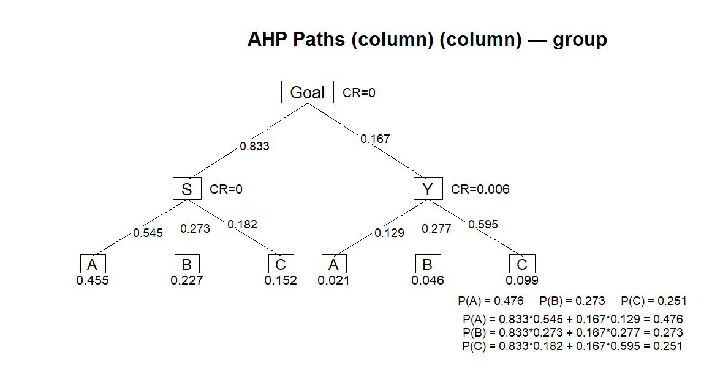
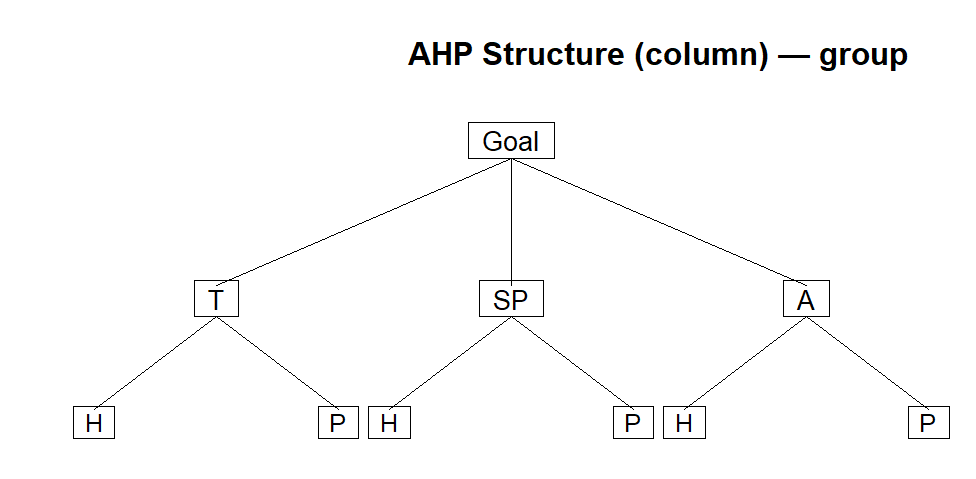
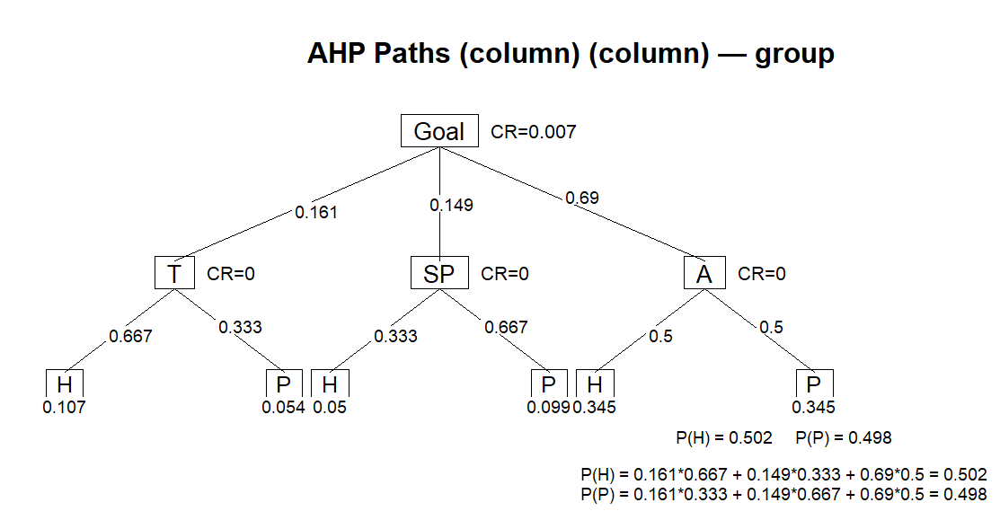
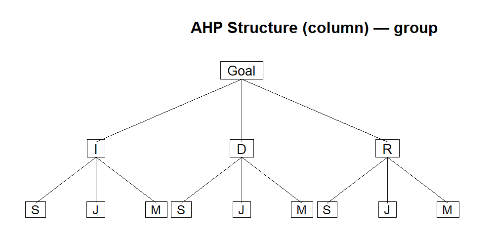
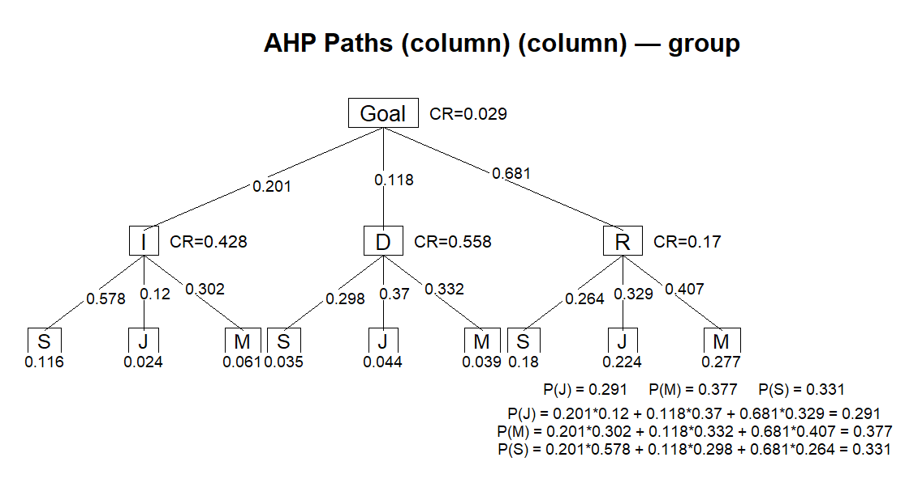
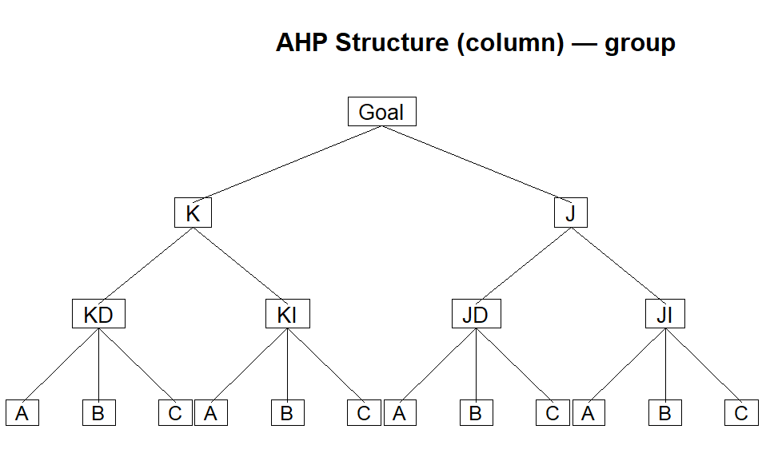
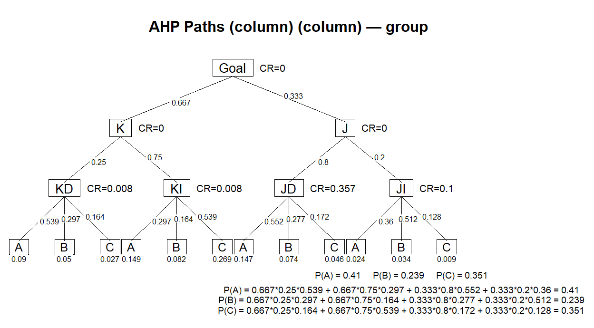

Hafta 09
Karar Kuramı: Temel Kavramlar ve Belirlilik Altında Karar Verme
13/11/2025
Karar Kuramı
Karar Kuramı
- Karar kuramı, karar vericiye karar alma ve karar sürecini geliştirme konularında yol gösteren bir yaklaşımdır.
- Söz konusu yaklaşım, karar verilecek duruma ilişkin bilgi miktarına göre üç başlık altında incelenir.
- Belirlilik durumunda karar alma
- Risk durumunda karar alma
- Belirsizlik durumunda karar alma
Belirlilik durumunda karar alma
Belirlilik durumunda karar alma
- Belirlilik durumunda karar almada, karar vericinin aralarından seçim yapacağı karar seçeneklerine ilişkin sonuç değerleri ile olayın yapısı hakkındaki bilgisinin eksiksiz olduğu varsayılır.
- Doğal olarak en iyi sonucu verecek olan alternatif seçilir.
- Doğrusal programlama belirlilik durumunda karar alma probleminin bir örneğidir.
- Örnek: Bunun için beslenme gereksinmemizi en düşük maliyetle karşılayacak besin maddeleri miktarlarını belirlemek istediğimizi düşünelim.
- Besin maddelerinin birim maliyetleri (\(C_j\)) sabit sayılar olsun.
- \(j\) ürünü tüketim miktarı \(x_j\), değeri bilinen bir sabit sayı olarak kabul edildiğinde, \(j\) ürününün maliyete olan katkısı \(C_j \cdot x_j\) de sabit bir sayı olur.
- Tüm \(C_j \cdot x_j\) kombinasyonları kıyaslanarak en düşük olan seçilir.
Risk durumunda karar alma
Risk durumunda karar alma
- Risk durumunda problemin seçeneklerine ilişkin değerler ve olayın yapısı olasılıklar ile açıklanırken, belirsizlik durumunda sonuç değerleri bir ölçüde bilinse de olayın yapısına ilişkin olasılıklar hakkında hiçbir bilgi edinilememektedir.
- Özetle, belirlilik ve belirsizlik verilerle ilgili bilgi derecesi bakımından iki aşırı ucu temsil ederken, risk bu iki uç arasında bulunur.
- Örnek: Risk ve belirsizlik durumlarını açıklamak için beslenme problemi örneğine dönelim.
- Risk durumunda maliyet katsayısı \(C_j\) sabit sayı olma özelliğini yitirir ve kesin değeri bilinmeyen ancak, istendiğinde değeri ilgili olasılık yoğunluk fonksiyonu cinsinden açıklanabilen bir rasgele değişken olur.
- Buna göre \(C_j\), olasılık yoğunluk fonksiyonu \(f(C_j)\) ile gösterilen bir rasgele değişken olarak tanımlanabilir.
- Bu durumda, kendisine ait bir olasılık yoğunluk fonksiyonu tanımlanmaksızın, \(C_j\) hakkında konuşmak fazla anlamlı olmaz.
- Bunun sonucunda, \(x_j\)’nin belirli bir değeri için \(j\)’inci değişkenin kara olan katkısı \(C_j \cdot x_j\)’de kesin değeri bilinmeyen bir rasgele değişken olur.
Belirsizlik durumunda karar alma
Belirsizlik durumunda karar alma
- Belirsizlik durumunda ise, \(f(C_j)\) olasılık yoğunluk fonksiyonu bilinmez veya belirlenemez.
- Ancak, bu konudaki bilgi eksikliği problem hakkında hiçbir bilgi yoktur şeklinde yorumlanmamalıdır.
- Sözgelimi, karar verici \(C_j\)’nin değerlerinden birine eşit olduğunu bilebilir ancak, bu bilgi duruma ilişkin olasılıkların belirlenmesinde yetersiz kalır.
- Bu durum belirsizlik ortamında karar alma durumudur.
- Karar probleminin nasıl formüle edileceği ve çözüleceği doğrudan doğruya karar verenin problemin bileşenleri hakkındaki bilgi derecesine bağlıdır.
Karar Alma Ölçütleri
Karar Alma Ölçütleri
- Belirlilik durumunda evrensel biçimde kabul görmüş karar alma ölçütü, kârın en büyüklenmesi veya maliyetin en küçüklenmesi iken, belirsizlik ve risk durumlarında karar almada değişik ölçütler söz konusu olur.
- Sözgelimi, risk ortamında karar almada ortalama (beklenen) kârın en büyüklenmesi karar ölçütü olarak kabul edilebilirse de bu ölçüt bütün durumlar için uygun olmayabilir.
Karar Analizinin Temel Adımları
Karar Analizinin Temel Adımları
- Sorunun tanımlanması
- Tüm olası seçeneklerin listelenmesi
- Karar Verici’nin kontrolunda olmayan / doğanın sunduğu tüm olası olayların listelenmesi
- Her seçeneğin her olay için elde edeceği sonuçları gösteren karar tablosunun oluşturulması.
- Bir karar modelinin seçilmesi (doğa durumuna göre)
- Modelin uygulanması ve bir seçeneğin seçilerek karar verilmesi.
Karar Problemi
Karar Problemi
- Birden fazla olay ve birden fazla karar seçeneğinin (eylem biçimi, strateji) bulunması, sistemin davranış ölçeğinin her bir stratejiye göre farklı değer alması ve bu değerlerin bilinmemesi durumundaki bir probleme karar problemi denir.
Karar Probleminin Ortak Özellikleri
Karar Probleminin Ortak Özellikleri
- Karar Verici: Sisteme amacına göre hedefler koyan, bu hedeflere ulaşmak için amaçlar, stratejiler ve taktikler tanımlayan, bu tanımlar uyarınca sistemin davranışlarını planlayan, örgütleyen, denetleyen, sapmalar karşısında gerekli düzenlemeyi yapan birey ya da topluluğa karar verici denir.
- Strateji (Eylem Biçimi): Karar vericinin amaç veya amaçlarına ulaşmasını sağlayacak değişik yollar veya hareket tarzlarının her birine strateji veya eylem biçimi denir. Stratejilerin belirlenmesi ve tanımlanması karar vericinin en önemli görevlerindendir. Stratejiler karar vericinin kontrolünde olan faktörlerdir.
- Olay (Doğal Durum): Karar vericinin davranışını etkileyen ve alabileceği değerlerde karar vericinin hiçbir etkisi olmayan faktörlerdir. Olaylar, karar vericinin içinde bulunduğu karar ortamını oluştururlar. Sayıları ne olursa olsun gelecekte yalnızca bir olayın gerçekleşeceği unutulmamalıdır.
- Sonuç: Her bir strateji ve olay bileşimi sonucu ortaya çıkan değerdir. Sonuç değerlerine ödeme, yarar veya kayıp denir ve bunlar genellikle parasal değer cinsinden açıklanır
Belirlilik Altında Karar Verme - Analitik Hiyerarşi Yaklaşımı
Belirlilik Altında Karar Verme - Analitik Hiyerarşi Yaklaşımı
- Analitik Hiyerarşi Süreci (AHP), 1970’lerde Thomas L. Saaty tarafından geliştirilen ve çok kriterli karar verme problemlerinde kullanılan bir yöntemdir.
- AHP, karmaşık kararları hiyerarşik bir yapıya dönüştürerek karar vericinin hem nicel hem de nitel yargılarını sistematik biçimde değerlendirmesini sağlar.
- Süreç, karar hedefinin en üstte yer aldığı bir hiyerarşi oluşturulmasıyla başlar; ardından kriterler, alt kriterler ve alternatifler belirlenir.
- Karar verici, ikili karşılaştırmalar aracılığıyla her seviyedeki öğelerin göreli önemini değerlendirir.
- Elde edilen karşılaştırma matrislerinden özvektör yöntemiyle ağırlıklar hesaplanır ve tutarlılık oranı (CR) analiziyle yargıların tutarlılığı kontrol edilir.
- Böylece AHP, öznel yargılara dayalı kararları matematiksel temele oturtarak en uygun alternatifi seçmede güçlü ve esnek bir yöntem sunar.
Örnek 1: Üniversite Tercihi - Basit Versiyon (1)
Örnek 1: Üniversite Tercihi - Basit Versiyon (1)
- Başarılı bir öğrenci olan Zeki üç üniversiteden akademik burs kazanmıştır: A üniversitesi, B üniversitesi ve C üniversitesi.
- Bir üniversiteyi seçmek için Zeki iki kriter belirler: üniversitenin yeri ve akademik saygınlık.
- Mükemmel bir öğrenci olarak, akademik saygınlığa üniversitenin yerinden 5 kat fazla önem verip ağırlıkları %83 akademik saygınlık, %17 üniversitenin yeri olarak belirler.
- Sonra bu üç üniversiteyi yer ve akademik saygınlık açısından derecelendirmek için sistematik analizi kullanır (daha sonra anlatılacaktır).
Zeki yaptığı analiz sonucunda,
- Yer: A üni. (%12.9), B üni. (%27.7) ve C üni. (%59.4)
- Saygınlık: A üni. (%54.5), B üni. (%27.3) ve C üni. (%18.2)
olarak belirlemiştir.
Problem iki kriter (yer ve saygınlık) ve üç karar alternatifiyle (A, B ve C üniversiteleri) işlenen tek hiyerarşiyle ilgilenmektedir.
Zeki bu durumda hangi üniversiteyi seçmelidir?
Örnek 1: Üniversite Tercihi - Basit Versiyon (2)
Örnek 1: Üniversite Tercihi - Basit Versiyon (2)
Bu üç üniversitenin derecelenmesi her bir üniversite için birleşik bir ağırlığın hesaplanmasına dayanır.
- A üniversitesi = \(0.167 \times 0.129 + 0.833 \times 0.545 = 0.476\)
- B üniversitesi = \(0.167 \times 0.277 + 0.833 \times 0.273 = 0.273\)
- C üniversitesi = \(0.167 \times 0.595 + 0.833 \times 0.182 = 0.251\)
Bu hesaplara göre A üniversitesi en yüksek birleşik ağırlıkla (\(0.476\)) Zeki için en uygun tercih olacaktır.
Örnek 1: Üniversite Tercihi - Basit Versiyon (3)
Örnek 1: Üniversite Tercihi - Basit Versiyon (2)

Analitik Hiyerarşi Yaklaşımı - Ağırlıkların Belirlenmesi (1)
Analitik Hiyerarşi Yaklaşımı - Ağırlıkların Belirlenmesi (1)
- AHP’nin püf noktası, karar alternatiflerinin derecelendiği göreceli ağırlıkların belirlenmesidir.
- Bir önceki örnekte göreceli ağırlıklar, \(0.129\), \(0.277\), \(0.595\), \(0.545\), \(0.273\) ve \(0.182\) idi.
- Bu değerler aşağıda bahsedilen yaklaşımla belirlenir.
- Verilmiş olan bir hiyerarşide \(n\) adet kriterle ilgilendiğimizi varsayalım.
- Burada ilk adım, karar vericinin farklı kriterlerin göreceli önemini yorumlamasını yansıtan ve \(\mathbf{A}\) ile tanımlanan \(n \times n\) ikili karşılaştırma matrisini oluşturmaktır.
- İkili karşılaştırma, \(i\) satırındaki \((i = 1,2, \dots,n)\) kriterlerin \(n\) sütunla temsil edilen her bir kritere bağlı olarak derecelendirilmesiyle yapılır.
- \(a_{ij}\), \(\mathbf{A}\)’nın \((i,j)\) elemanını tanımladığında, AHP \(1\) ile \(9\) arasında bir ölçek önerir.
Analitik Hiyerarşi Yaklaşımı - Ağırlıkların Belirlenmesi (2)
Analitik Hiyerarşi Yaklaşımı - Ağırlıkların Belirlenmesi (2)
- Önerilen bu ölçeğe göre,
- \(a_{ij} = 1\), \(i\) ve \(j\) nin eşit önemde olduğunu,
- \(a_{ij} = 5\), \(i\)’nin \(j\)’den çok önemli olduğunu
- \(a_{ij} = 9\), \(i\)’nin \(j\)’den kesinlikle çok önemli olduğunu yansıtır.
- \(1\) ile \(9\) arasındaki diğer değerler ara değerler olarak yorumlanır.
- Tutarlılık için \(a_{ij} = k \Rightarrow a_{ji} = \frac{1}{k}\) olarak ifade edilmelidir.
- Ayrıca \(\mathbf{A}\)’nın tüm diyagonal \(a_{ii}\) elemanları, kendilerine bağlı kriteri değerlendirdiği için \(1\) olmalıdır.
Örnek 1: Üniversite Tercihi - Ağırlıkların Belirlenmesi (1)
Örnek 1: Üniversite Tercihi - Ağırlıkların Belirlenmesi (1)
Zeki’nin karar problemi için belirlenen \(\mathbf{A}\) karar matrisini gösterelim.
Zeki bir üniversitenin saygınlığının (S) yerine (Y) göre çok daha önemli olacağını belirttiği için \(\mathbf{A}\) karar matrisinde saygınlığın yere göre önemi \(5\) olacak iken, yerin saygınlığa göre önemi ise bu değerin tersi olan \(\frac{1}{5}\) olacaktır.
\[ \mathbf{A} = \left[\begin{array}{c|cc} & \text{S} & \text{Y} \\ \hline \text{S} & 1 & 5 \\ \text{Y} & \frac{1}{5} & 1 \end{array}\right]\]
S ve Y’nin göreceli ağırlıkları her bir sütunun elemanlarını aynı sütunun elemanlarının toplamına bölerek \(\mathbf{A}\)’dan bulunur.
Böylece 1. sütunun elemanlarını \((1+\frac{1}{5}=1.2)\)’ye, 2. sütunun elemanlarını \((5+1=6)\)’ya bölerek normalleştiririz.
\[ \mathbf{N} = \left[\begin{array}{c|cc} & \text{S} & \text{Y} \\ \hline \text{S} & 0.833 & 0.833 \\ \text{Y} & 0.167 & 0.167 \end{array}\right] \]
\(n_{11} = \frac{1}{1.2}=0.833\), \(n_{21} = \frac{\frac{1}{5}}{1.2}=0.167\), \(n_{12} = \frac{5}{6}=0.833\) ve \(n_{22} = \frac{1}{6}=0.167\)
Örnek 1: Üniversite Tercihi - Ağırlıkların Belirlenmesi (2)
Örnek 1: Üniversite Tercihi - Ağırlıkların Belirlenmesi (2)
\[ \mathbf{N} = \left[\begin{array}{c|cc} & \text{S} & \text{Y} \\ \hline \text{S} & 0.833 & 0.833 \\ \text{Y} & 0.167 & 0.167 \end{array}\right] \]
\(\mathbf{N}\) belirlendikten sonra, istenen göreceli ağırlıklar \(w_S\) ve \(w_Y\) normalleştirilen matrisin satır ortalaması olarak bulunur.
Satır ortalamaları:
\(w_S = \frac{0.833+0.833}{2}= 0.833\) \(w_Y = \frac{0.167+0.167}{2}= 0.167\)
olarak bulunur.
Satır ortalamaları bir matris şeklinde
\[w = \begin{bmatrix}0.833 & 0.167\end{bmatrix}^T\]
şeklinde de gösterilebilir.
Bu örnek için \(\mathbf{N}\)’nin sütunları özdeştir. Bu durum yalnıca karar vericinin, \(\mathbf{A}\) matrislerine girişlerde mükemmel bir tutarlılık sergilediğinde ortaya çıkar. Bu noktaya daha sonra tekrar değinilecektir.
Örnek 1: Üniversite Tercihi - Ağırlıkların Belirlenmesi (3)
Örnek 1: Üniversite Tercihi - Ağırlıkların Belirlenmesi (3)
Ağırlıkların sadece değerlendirme kriterleri için belirlenmesi yeterli değildir. Her bir kriter için her bir alternatifin de birbiriyle karşılaştırıldığı matrislere ihtiyaç vardır.
A, B ve C üniversitesi alternatiflerinin göreceli ağırlıkları aşağıdaki karşılaştırma matrisleri kullanılarak \(S\) ve \(Y\) kriterleri içerisinde belirlenir.
Örneğin, Zeki her bir üniversite seçeneği için Saygınlık (S) kriteri için aşağıdaki karşılaştıma matrisini oluşturmuş olsun.
\[A_S = \left[\begin{array}{c|ccc} & \text{A} & \text{B} & \text{C} \\ \hline \text{A} & 1 & 2 & 3 \\ \text{B} & 0.5 & 1 & 1.5 \\ \text{C} & 0.333 & 0.667 & 1 \end{array}\right] \]
Bu matris saygınlık açısından A’nın B’den (\(2\)); A’nın C’den (\(3\)) ve B’nin C’den (\(1.5\)) daha önemli olduğunu belirtmektedir.
Sütun toplamları = \([1.833, 3.667, 5.5]\)
\[N_S = \left[\begin{array}{c|ccc} & \text{A} & \text{B} & \text{C} \\ \hline \text{A} & 0.545 & 0.545 & 0.545 \\ \text{B} & 0.273 & 0.273 & 0.273 \\ \text{C} & 0.182 & 0.182 & 0.182 \end{array}\right]\]
Satır ortalamaları:
\(w_{SA} = \frac{0.545+0.545+0.545}{3}= 0.545\) \(w_{SB} = \frac{0.273+0.273+0.273}{3}= 0.273\) \(w_{SC} = \frac{0.182+0.182+0.182}{3}= 0.182\)
olarak hesaplanır.
Satır ortalamaları matris şeklinde \(w_S = \begin{bmatrix}0.545 & 0.273 & 0.182 \end{bmatrix}^T\) gösterilir.
Bu üç değer sırasıyla A, B ve C üniversitelerinin akademik saygınlık açısından ağırlıklarını verir.
Örnek 1: Üniversite Tercihi - Ağırlıkların Belirlenmesi (4)
Örnek 1: Üniversite Tercihi - Ağırlıkların Belirlenmesi (4)
Aynı işlem bu kez akademik saygınlık yerine, üniversitenin yeri için yapılmalıdır.
Zeki bu kez her bir üniversite seçeneği için Yer (Y) kriteri için aşağıdaki karşılaştıma matrisini oluşturmuş olsun.
\[A_Y = \left[\begin{array}{c|ccc} & \text{A} & \text{B} & \text{C} \\ \hline \text{A} & 1 & 0.5 & 0.2 \\ \text{B} & 2 & 1 & 0.5 \\ \text{C} & 5 & 2 & 1 \end{array}\right]\]
Bu matris yer açısından A’nın B’den (\(0.5\)); A’nın C’den (\(0.2\)) ve B’nin C’den (\(0.5\)) daha kötü konumda olduğunu belirtmektedir.
Sütun toplamları = \([8, 3.5, 1.7]\)
\[N_Y = \left[\begin{array}{c|ccc} & \text{A} & \text{B} & \text{C} \\ \hline \text{A} & 0.125 & 0.143 & 0.118 \\ \text{B} & 0.25 & 0.286 & 0.294 \\ \text{C} & 0.625 & 0.571 & 0.588 \end{array}\right]\]
Satır ortalamaları:
\(w_{YA} = \frac{0.125+0.143+0.118}{3}= 0.129\) \(w_{YB} = \frac{0.25+0.286+0.294}{3}= 0.277\) \(w_{YC} = \frac{0.625+0.571+0.588}{3}= 0.595\)
Satır ortalamaları matris şeklinde \(w_Y = \begin{bmatrix}0.129 & 0.277 & 0.595 \end{bmatrix}^T\) gösterilir.
Bu üç değer sırasıyla A, B ve C üniversitelerinin yer açısından ağırlıklarını verir.
Dikkat ederseniz \(N\) ve \(N_S\) nin tüm sütunları özdeş iken \(N_Y\) nin sütunları özdeş değildir. Şimdi bunun ne anlama geldiğini öğrenelim.
Örnek 1: Üniversite Tercihi - Ağırlıkların Belirlenmesi (5)
Örnek 1: Üniversite Tercihi - Ağırlıkların Belirlenmesi (5)
Analitik Hiyerarşi Yaklaşımı - Karşılaştırma Matrisinin Tutarlılığı (1)
Analitik Hiyerarşi Yaklaşımı - Karşılaştırma Matrisinin Tutarlılığı (1)
\(N\) ve \(N_S\) nin tüm sütunları özdeş iken \(N_Y\) nin sütunlarının özdeş olmadığından bahsetmiştik.
Özdeş sütunlar karşılaştırmanın nasıl yapıldığına bakılmaksızın elde edilen göreceli ağırlıkların aynı olduğunu göstermektedir.
Bu orijinal \(A\) ve \(A_S\) karşılaştırma matrislerinin tutarlı olduğuna işaret ederken, \(A_Y\) matrisi tutarlı değildir.
Tüm karşılaştırma matrislerinin tutarlı olması zordur. Açıkçası, bu matrislerin temel yapısını insan yargısı oluşturur ve bir dereceye kadar tutarsızlık beklenebilir.
Önemli olan bu tutarsızlığın mantıksız diye değerlendirilmeyecek şekilde tölere edilebilmesini sağlamaktır.
Bir tutarsızlık söz konusu ise bunun kabul edilebilir düzeyde olup olmadığını belirlemek için A karşılaştırma matrisi için objektif bir ölçüt geliştirmek gerekir.
Analitik Hiyerarşi Yaklaşımı - Karşılaştırma Matrisinin Tutarlılığı (2)
Analitik Hiyerarşi Yaklaşımı - Karşılaştırma Matrisinin Tutarlılığı (2)
AHP tutarlılık oranı
\[CR = \frac{CI}{RI}\] şeklinde hesaplanır.
Burada, \(CI\), \(A\) nın tutarlılık indeksini göstermekte ve
\[CI = \frac{n_{maks}-n}{n-1}\]
ile hesaplanmaktadır.
Formülde \(n\), \(A\) matrisinin satır sayısı iken, \(n_{maks}\), \(A \overline{w}\) matrislerinin çarpımı sonucunda elde edilen sütun vektörünun elemanlarının toplanmasıyla bulunur.
\(RI\), \(A\) nın rastgele tutarlılık indeksi olarak tanımlanır ve
\[RI = \frac{1.98 (n-2)}{n}\]
formülüyle hesaplanır.
Eğer \(CR \leq 0.1\) ise tutarsızlık düzeyi kabul edilebilir. Aksi taktirde \(A\) karşılaştırma matrisinde tutarsızlık yüksektir. Matris elemanları kontrol edilmelidir.
Örnek 1: Üniversite Tercihi - Tutarlılığın Kontrolü
Örnek 1: Üniversite Tercihi - Tutarlılığın Kontrolü
\(A_Y\) matrisi \(N_Y\) matrisinin sütunları özdeş olmadığı için tutarsızdır. Tutarsızlığın kabul edilebilir ölçülerde olup olmadığını belirleyelim.
İşleme \(n_{maks}\) ı bularak başlayalım.
\[A_Y \cdot \overline{w}_Y = \left[\begin{array}{ccc} 1 & \frac{1}{2} & \frac{1}{5} \\ 2 & 1 & \frac{1}{2} \\ 5 & 2 & 1 \end{array}\right] \cdot \left[\begin{array}{c} 0.129\\ 0.277\\ 0.595\end{array}\right] = \left[\begin{array}{c} 0.386\\ 0.831\\ 1.791\end{array}\right]\]
\[n_{maks} = 0.386 + 0.831 + 1.791 = 3.007\]
\(n=3\) olduğundan
\[CI = \tfrac{n_{maks}-n}{n-1} = \tfrac{3.007 - 3}{2} = 0.004\]
\[RI = \tfrac{1.98(n-2)}{n} = \tfrac{1.98(3-2)}{3} = 0.66\]
\[CR = \tfrac{CI}{RI} = 0.006\]
\(CR \leq 0.1\) olduğundan \(A_Y\) nin tutarsızlık düzeyi kabul edilebilir seviyededir.
Örnek 2: Yazar - Yayıncı Seçimi (1)
Örnek 2: Yazar - Yayıncı Seçimi (1)
Bir yazar yeni bir Yöneylem Araştırması kitabı için yayımcı seçmek üzere üç kriter belirler.
Yazara verilen telif hakkı yüzdesi (T), satış ve pazarlama (SP) ve avans ödemesi (A).
Kitapla ilgilendiği bilinen iki yayımcı şirket H ve P dir.
Yazar karşılaştırma matrislerini yanda verildiği şekilde oluşturduğuna göre, H ve P yayımcısından hangisini tercih etmesi gerektiğini ve kararın tutarlılığının seviyesini belirleyin.
\[A = \left[\begin{array}{c|ccc} & \text{T} & \text{SP} & \text{A} \\ \hline \text{T} & 1 & 1 & 0.25 \\ \text{SP} & 1 & 1 & 0.2 \\ \text{A} & 4 & 5 & 1 \end{array}\right]\]
\[A_T= \left[\begin{array}{c|cc} & \text{H} & \text{P} \\ \hline \text{H} & 1 & 2 \\ \text{P} & 0.5 & 1 \end{array}\right]\]
\[A_{SP} = \left[\begin{array}{c|cc} & \text{H} & \text{P} \\ \hline \text{H} & 1 & 0.5 \\ \text{P} & 2 & 1 \end{array}\right]\]
\[A_{A} = \left[\begin{array}{c|cc} & \text{H} & \text{P} \\ \hline \text{H} & 1 & 1 \\ \text{P} & 1 & 1 \end{array}\right]\]
Örnek 2: Yazar - Yayıncı Seçimi (2)
Örnek 2: Yazar - Yayıncı Seçimi (2)
Öncelikle sorunun şemasını çizerek başlayalım.

Örnek 2: Yazar - Yayıncı Seçimi (3)
Örnek 2: Yazar - Yayıncı Seçimi (3)
Tüm matrislerin elemanlarını, sütun toplamlarına bölerek normalize edilmiş hale getirelim.
\[N = \left[\begin{array}{c|ccc} & \text{T} & \text{SP} & \text{A} \\ \hline \text{T} & 0.167 & 0.143 & 0.172 \\ \text{SP} & 0.167 & 0.143 & 0.138 \\ \text{A} & 0.667 & 0.714 & 0.69 \end{array}\right]\]
\[N_T = \left[\begin{array}{c|cc} & \text{H} & \text{P} \\ \hline \text{H} & 0.667 & 0.667 \\ \text{P} & 0.333 & 0.333 \end{array}\right]\]
\[N_{SP} = \left[\begin{array}{c|cc} & \text{H} & \text{P} \\ \hline \text{H} & 0.333 & 0.333 \\ \text{P} & 0.667 & 0.667 \end{array}\right]\]
\[N_A = \left[\begin{array}{c|cc} & \text{H} & \text{P} \\ \hline \text{H} & 0.5 & 0.5 \\ \text{P} & 0.5 & 0.5 \end{array}\right]\]
Satır ortalamalarını hesaplayarak her bir matris için göreceli ağırlıkları elde edelim.
\(N\) matrisi için \[w_{T} = \tfrac{1}{3}(0.167 + 0.143 + 0.172) = 0.161\] \[w_{SP} = \tfrac{1}{3}(0.167 + 0.143 + 0.138) = 0.149\] \[w_{A} = \tfrac{1}{3}(0.667 + 0.714 + 0.69) = 0.69\] \[w = \begin{bmatrix}0.161 & 0.149 & 0.69\end{bmatrix}^T\]
\(N_T\) matrisi için \[w_{T,H} = \tfrac{1}{2}(0.667 + 0.667) = 0.667\] \[w_{T,P} = \tfrac{1}{2}(0.333 + 0.333) = 0.333\] \[w_T = \begin{bmatrix}0.667 & 0.333\end{bmatrix}^T\]
\(N_T\), \(N_{SP}\) ve \(N_A\) matrislerinin sütunları özdeş olduğundan tutarlılardır.
Satır ortalamalarını hesaplayarak her bir matris için göreceli ağırlıkları elde edelim.
\(N_{SP}\) matrisi için \[w_{SP,H} = \tfrac{1}{2}(0.333 + 0.333) = 0.333\] \[w_{SP,P} = \tfrac{1}{2}(0.667 + 0.667) = 0.667\] \[w_{SP} = \begin{bmatrix}0.333 & 0.667\end{bmatrix}^T\]
\(N_A\) matrisi için \[w_{A,H} = \tfrac{1}{2}(0.5 + 0.5) = 0.5\] \[w_{A,P} = \tfrac{1}{2}(0.5 + 0.5) = 0.5\] \[w_A = \begin{bmatrix}0.5 & 0.5\end{bmatrix}^T\]
\(N\) matrisinin sütunları özdeş olmadığından tutarlı değildir. Tutarlılık derecesi araştırılmalıdır.
Örnek 2: Yazar - Yayıncı Seçimi (4)
Örnek 2: Yazar - Yayıncı Seçimi (4)
\(N_T\), \(N_{SP}\) ve \(N_A\) matrisleri tutarlı olduklarından \(CR\) değerleri \(0\) dır.
Sadece \(N\) matrisinin tutarlılığına bakılmalıdır.
\[A \cdot \overline{w} = \left[\begin{array}{ccc} 1 & 1 & 0.25 \\ 1 & 1 & 0.2 \\ 4 & 5 & 1 \end{array}\right] \cdot \left[\begin{array}{c} 0.161 \\ 0.149 \\ 0.69\end{array}\right] = \left[\begin{array}{c} 0.482 \\ 0.448 \\ 2.079\end{array}\right]\]
\[n_{maks} = 0.482 + 0.448 + 2.079 = 3.009\]
\(n=3\) olduğundan
\[CI = \tfrac{\lambda_{\max}-n}{n-1} = \tfrac{3.009 - 3}{2} = 0.004\]
\[RI = \tfrac{1.98(n-2)}{n} = \tfrac{1.98(3-2)}{3} = 0.66\]
\[CR = \tfrac{CI}{RI} = 0.007\]
\(CR \leq 0.1\) olduğundan \(A\) nin tutarsızlık düzeyi kabul edilebilir seviyededir.
Örnek 2: Yazar - Yayıncı Seçimi (5)
Örnek 2: Yazar - Yayıncı Seçimi (5)
Son olarak hesaplanan ağırlıklar ile yazarın tercihini belirleyelim.
\[P(H) = w_T\cdot w_{T,H} + w_{SP}\cdot w_{SP,H} + w_A\cdot w_{A,H}\] \[P(H) = 0.161\cdot0.667 + 0.149\cdot0.333 + 0.69\cdot0.5 = 0.502\]
\[P(P) = w_T\cdot w_{T,P} + w_{SP}\cdot w_{SP,P} + w_A\cdot w_{A,P} \] \[P(P) = 0.161\cdot0.333 + 0.149\cdot0.667 + 0.69\cdot0.5 = 0.498\]
Çok küçük bir farkla da olsa (\(\%50.2\)) yazar \(H\) yayınevini seçmelidir.
Örnek 2: Yazar - Yayıncı Seçimi (6)
Örnek 2: Yazar - Yayıncı Seçimi (6)
Son durumda şema aşağıdaki hale gelir.

Örnek 3: İşe Alım (1)
Örnek 3: İşe Alım (1)
\(C\&H\) firmasının insan kaynakları departmanı muhtemel bir çalışan arayışını üç adaya indirmiştir. Sinan (S), Jale (J) ve Melis (M).
Son seçim üç kritere dayanmaktadır: kişisel görüşme (I), deneyim (D) ve Referanslar (R).
Üç kriter arasında öncelikleri belirlemek için departman \(A\) matrisini kullanmaktadır.
Adaylarla görüşülüp, deneyim ve referanslarına bakılarak veriler toplanınca \(A_I\), \(A_D\) ve \(A_R\) karşılaştırma matrisleri de oluşturulmuştur.
Bu adaylardan hangisi işe alınmalıdır? Verinin tutarlılığını değerlendirin.
\[A = \left[\begin{array}{c|ccc} & \text{I} & \text{D} & \text{R} \\ \hline \text{I} & 1 & 2 & 0.25 \\ \text{D} & 0.5 & 1 & 0.2 \\ \text{R} & 4 & 5 & 1 \end{array}\right]\]
\[A_I = \left[\begin{array}{c|ccc} & \text{S} & \text{J} & \text{M} \\ \hline \text{S} & 1 & 3 & 4 \\ \text{J} & 0.333 & 1 & 0.2 \\ \text{M} & 0.25 & 5 & 1 \end{array}\right]\]
\[A_D = \left[\begin{array}{c|ccc} & \text{S} & \text{J} & \text{M} \\ \hline \text{S} & 1 & 0.333 & 2 \\ \text{J} & 3 & 1 & 0.5 \\ \text{M} & 0.5 & 2 & 1 \end{array}\right]\]
\[A_R = \left[\begin{array}{c|ccc} & \text{S} & \text{J} & \text{M} \\ \hline \text{S} & 1 & 0.5 & 1 \\ \text{J} & 2 & 1 & 0.5 \\ \text{M} & 1 & 2 & 1 \end{array}\right]\]
Örnek 3: İşe Alım (2)
Örnek 3: İşe Alım (2)
Öncelikle sorunun şemasını çizerek başlayalım.

Örnek 3: İşe Alım (3)
Örnek 3: İşe Alım (3)
Tüm matrislerin elemanlarını, sütun toplamlarına bölerek normalize edilmiş hale getirelim.
\[N = \left[\begin{array}{c|ccc} & \text{I} & \text{D} & \text{R} \\ \hline \text{I} & 0.182 & 0.25 & 0.172 \\ \text{D} & 0.091 & 0.125 & 0.138 \\ \text{R} & 0.727 & 0.625 & 0.69 \end{array}\right]\]
\[N_I = \left[\begin{array}{c|ccc} & \text{S} & \text{J} & \text{M} \\ \hline \text{S} & 0.632 & 0.333 & 0.769 \\ \text{J} & 0.211 & 0.111 & 0.038 \\ \text{M} & 0.158 & 0.556 & 0.192 \end{array}\right]\]
\[N_{D} = \left[\begin{array}{c|ccc} & \text{S} & \text{J} & \text{M} \\ \hline \text{S} & 0.222 & 0.1 & 0.571 \\ \text{J} & 0.667 & 0.3 & 0.143 \\ \text{M} & 0.111 & 0.6 & 0.286 \end{array}\right]\]
\[N_R =\left[\begin{array}{c|ccc} & \text{S} & \text{J} & \text{M} \\ \hline \text{S} & 0.25 & 0.143 & 0.4 \\ \text{J} & 0.5 & 0.286 & 0.2 \\ \text{M} & 0.25 & 0.571 & 0.4 \end{array}\right]\]
Satır ortalamalarını hesaplayarak her bir matris için göreceli ağırlıkları elde edelim.
\(N\) matrisi için \[w_{I} = \tfrac{1}{3}(0.182 + 0.25 + 0.172) = 0.201\] \[w_{D} = \tfrac{1}{3}(0.091 + 0.125 + 0.138) = 0.118\] \[w_{R} = \tfrac{1}{3}(0.727 + 0.625 + 0.69) = 0.681\] \[w = \begin{bmatrix}0.201 & 0.118 & 0.681\end{bmatrix}^T\]
\(N_I\) matrisi için \[w_{I,S} = \tfrac{1}{3}(0.632 + 0.333 + 0.769) = 0.578\] \[w_{I,J} = \tfrac{1}{3}(0.211 + 0.111 + 0.038) = 0.12\] \[w_{I,M} = \tfrac{1}{3}(0.158 + 0.556 + 0.192) = 0.302\] \[w_I = \begin{bmatrix}0.578 & 0.12 & 0.302\end{bmatrix}^T\]
Satır ortalamalarını hesaplayarak her bir matris için göreceli ağırlıkları elde edelim.
\(N_{D}\) matrisi için \[w_{D,S} = \tfrac{1}{3}(0.222 + 0.1 + 0.571) = 0.298\] \[w_{D,J} = \tfrac{1}{3}(0.667 + 0.3 + 0.143) = 0.37\] \[w_{D,M} = \tfrac{1}{3}(0.111 + 0.6 + 0.286) = 0.332\] \[w_D = \begin{bmatrix}0.298 & 0.37 & 0.332\end{bmatrix}^T\]
\(N_R\) matrisi için \[w_{R,S} = \tfrac{1}{3}(0.25 + 0.143 + 0.4) = 0.264\] \[w_{R,J} = \tfrac{1}{3}(0.5 + 0.286 + 0.2) = 0.329\] \[w_{R,M} = \tfrac{1}{3}(0.25 + 0.571 + 0.4) = 0.407\] \[w_R = \begin{bmatrix}0.264 & 0.329 & 0.407\end{bmatrix}^T\]
Örnek 3: İşe Alım (4)
Örnek 3: İşe Alım (4)
Elde edilen matrislerin hiç biri tutarlı değildir. Hangi matrislerdeki tutarsızlığa katlanılabilineceğine bakalım.
Öncelikle \(A\) matrisinin tutarlılığına bakalım.
\[A \cdot \overline{w} = \left[\begin{array}{ccc} 1 & 2 & 0.25 \\ 0.5 & 1 & 0.2 \\ 4 & 5 & 1 \end{array}\right] \cdot \left[\begin{array}{c} 0.201 \\ 0.118 \\ 0.681\end{array}\right] = \left[\begin{array}{c} 0.607 \\ 0.355 \\ 2.076\end{array}\right]\]
\[n_{maks} = 0.607 + 0.355 + 2.076 = 3.038\]
\(n=3\) olduğundan
\[CI = \tfrac{\lambda_{\max}-n}{n-1} = \tfrac{3.038 - 3}{2} = 0.019\]
\[RI = \tfrac{1.98(n-2)}{n} = \tfrac{1.98(3-2)}{3} = 0.66\]
\[CR = \tfrac{CI}{RI} = 0.029\]
\(CR \leq 0.1\) olduğundan \(A\) nin tutarsızlık düzeyi kabul edilebilir seviyededir.
Şimdi \(A_I\) matrisinin tutarlılığına bakalım.
\[A_I \cdot \overline{w}_I = \left[\begin{array}{ccc} 1 & 3 & 4 \\ 0.333 & 1 & 0.2 \\ 0.25 & 5 & 1 \end{array}\right] \cdot \left[\begin{array}{c} 0.578 \\ 0.12 \\ 0.302\end{array}\right] = \left[\begin{array}{c} 2.146 \\ 0.373 \\ 1.047\end{array}\right]\]
\[n_{maks} = 2.146 + 0.373 + 1.047 = 3.566\]
\(n=3\) olduğundan
\[CI = \tfrac{\lambda_{\max}-n}{n-1} = \tfrac{3.566 - 3}{2} = 0.283\]
\[RI = \tfrac{1.98(n-2)}{n} = \tfrac{1.98(3-2)}{3} = 0.66\]
\[CR = \tfrac{CI}{RI} = 0.428\]
\(CR \geq 0.1\) olduğundan \(A_I\) nin tutarsızlık düzeyi kabul edilemez seviyededir.
Örnek 3: İşe Alım (5)
Örnek 3: İşe Alım (5)
Ardından \(A_D\) matrisinin tutarlılığına bakalım.
\[A_D \cdot \overline{w}_D = \left[\begin{array}{ccc} 1 & 0.333 & 2 \\ 3 & 1 & 0.5 \\ 0.5 & 2 & 1 \end{array}\right] \cdot \left[\begin{array}{c} 0.298 \\ 0.37 \\ 0.332\end{array}\right] = \left[\begin{array}{c} 1.086 \\ 1.43 \\ 1.221\end{array}\right]\]
\[n_{maks} = 1.086 + 1.43 + 1.221 = 3.736\]
\(n=3\) olduğundan
\[CI = \tfrac{\lambda_{\max}-n}{n-1} = \tfrac{3.736 - 3}{2} = 0.368\]
\[RI = \tfrac{1.98(n-2)}{n} = \tfrac{1.98(3-2)}{3} = 0.66\]
\[CR = \tfrac{CI}{RI} = 0.558\]
\(CR \geq 0.1\) olduğundan \(A_D\) nin tutarsızlık düzeyi kabul edilemez seviyededir.
Son olarak \(A_R\) matrisinin tutarlılığına bakalım.
\[A_R \cdot \overline{w}_R = \left[\begin{array}{ccc} 1 & 0.5 & 1 \\ 2 & 1 & 0.5 \\ 1 & 2 & 1 \end{array}\right] \cdot \left[\begin{array}{c} 0.264 \\ 0.329 \\ 0.407\end{array}\right] = \left[\begin{array}{c} 0.836 \\ 1.061 \\ 1.329\end{array}\right]\]
\[n_{maks} = 0.836 + 1.061 + 1.329 = 3.225\]
\(n=3\) olduğundan
\[CI = \tfrac{\lambda_{\max}-n}{n-1} = \tfrac{3.009 - 3}{2} = 0.113\]
\[RI = \tfrac{1.98(n-2)}{n} = \tfrac{1.98(3-2)}{3} = 0.66\]
\[CR = \tfrac{CI}{RI} = 0.017\]
\(CR \geq 0.1\) olduğundan \(A_R\) nin tutarsızlık düzeyi kabul edilemez seviyededir.
Örnek 3: İşe Alım (6)
Örnek 3: İşe Alım (6)
Son olarak hesaplanan ağırlıklar ile işe alım tercihini belirleyelim.
\[P(S) = w_I\cdot w_{I,S} + w_{D}\cdot w_{D,S} + w_R\cdot w_{R,S}\] \[P(S) = 0.201 \cdot 0.578 + 0.118 \cdot 0.298 + 0.681 \cdot 0.264 = 0.331\]
\[P(J) = w_I\cdot w_{I,J} + w_{D}\cdot w_{D,J} + w_R\cdot w_{R,J} \] \[P(J) = 0.201 \cdot 0.12 + 0.118 \cdot 0.37 + 0.681 \cdot 0.329 = 0.291\]
\[P(M) = w_I\cdot w_{I,M} + w_{D}\cdot w_{D,M} + w_R\cdot w_{R,M} \] \[P(M) = 0.201 \cdot 0.302 + 0.118 \cdot 0.332 + 0.681 \cdot 0.407 = 0.377\]
İş için en iyi aday \(\%37.7\) ile Melis (M) tir.
Örnek 3: İşe Alım (7)
Örnek 3: İşe Alım (7)
Son durumda şema aşağıdaki hale gelir.

Örnek 4: Ev Satın Alma (1)
Örnek 4: Ev Satın Alma (1)
Kerem ve Jale Perçem (K ve J) çifti yeni bir ev alacaklardır.
A, B ve C evlerinin fiyatları bütçelerine uygundur.
Perçem ailesi evin seçimi için iki kriter belirler: Depreme Dayanıklılık (D) ve İşe Yakınlık (İ).
Buradan yandaki karşılaştırma matrisleri elde edilmiştir.
Buna göre üç evin öncelik sırasını değerlendirin ve her bir matris için tutarlılık oranını hesaplayın.
\[A = \left[\begin{array}{c|cc} & \text{K} & \text{J} \\ \hline \text{K} & 1 & 2 \\ \text{J} & 0.5 & 1 \end{array}\right]\]
\[A_K = \left[\begin{array}{c|cc} & \text{KD} & \text{KI} \\ \hline \text{KD} & 1 & 0.333 \\ \text{KI} & 3 & 1 \end{array}\right]\]
\[A_J = \left[\begin{array}{c|cc} & \text{JD} & \text{JI} \\ \hline \text{JD} & 1 & 4 \\ \text{JI} & 0.25 & 1 \end{array}\right]\]
\[A_{KD} = \left[\begin{array}{c|ccc} & \text{A} & \text{B} & \text{C} \\ \hline \text{A} & 1 & 2 & 3 \\ \text{B} & 0.5 & 1 & 2 \\ \text{C} & 0.333 & 0.5 & 1 \end{array}\right]\]
\[A_{KI} = \left[\begin{array}{c|ccc} & \text{A} & \text{B} & \text{C} \\ \hline \text{A} & 1 & 2 & 0.5 \\ \text{B} & 0.5 & 1 & 0.333 \\ \text{C} & 2 & 3 & 1 \end{array}\right]\]
\[A_{JD} = \left[\begin{array}{c|ccc} & \text{A} & \text{B} & \text{C} \\ \hline \text{A} & 1 & 4 & 2 \\ \text{B} & 0.25 & 1 & 3 \\ \text{C} & 0.5 & 0.333 & 1 \end{array}\right]\]
\[A_{JI} = \left[\begin{array}{c|ccc} & \text{A} & \text{B} & \text{C} \\ \hline \text{A} & 1 & 0.5 & 4 \\ \text{B} & 2 & 1 & 3 \\ \text{C} & 0.25 & 0.333 & 1 \end{array}\right]\]
Örnek 4: Ev Satın Alma (2)
Örnek 4: Ev Satın Alma (2)
Öncelikle sorunun şemasını çizerek başlayalım.

Örnek 4: Ev Satın Alma (3)
Örnek 4: Ev Satın Alma (3)
Tüm matrislerin elemanlarını, sütun toplamlarına bölerek normalize edilmiş hale getirelim.
\[N = \left[\begin{array}{c|cc} & \text{K} & \text{J} \\ \hline \text{K} & 0.667 & 0.667 \\ \text{J} & 0.333 & 0.333 \end{array}\right]\]
\[N_K = \left[\begin{array}{c|cc} & \text{KD} & \text{KI} \\ \hline \text{KD} & 0.25 & 0.25 \\ \text{KI} & 0.75 & 0.75 \end{array}\right]\]
\[N_J = \left[\begin{array}{c|cc} & \text{JD} & \text{JI} \\ \hline \text{JD} & 0.8 & 0.8 \\ \text{JI} & 0.2 & 0.2 \end{array}\right]\]
\[N_{KD} = \left[\begin{array}{c|ccc} & \text{A} & \text{B} & \text{C} \\ \hline \text{A} & 0.545 & 0.571 & 0.5 \\ \text{B} & 0.273 & 0.286 & 0.333 \\ \text{C} & 0.182 & 0.143 & 0.167 \end{array}\right]\]
Satır ortalamalarını hesaplayarak her bir matris için göreceli ağırlıkları elde edelim.
\(N\) matrisi için \[w_{K} = \tfrac{1}{2}(0.667 + 0.667) = 0.667\] \[w_{J} = \tfrac{1}{2}(0.333 + 0.333) = 0.333\] \[w = \begin{bmatrix}0.667 & 0.333\end{bmatrix}^T\]
\(N_K\) matrisi için \[w_{K,D} = \tfrac{1}{2}(0.25 + 0.25) = 0.25\] \[w_{K,I} = \tfrac{1}{2}(0.75 + 0.75) = 0.75\] \[w_K = \begin{bmatrix}0.25 & 0.75\end{bmatrix}^T\]
Satır ortalamalarını hesaplayarak her bir matris için göreceli ağırlıkları elde edelim.
\(N_J\) matrisi için \[w_{J,D} = \tfrac{1}{2}(0.8 + 0.8) = 0.8\] \[w_{J,I} = \tfrac{1}{2}(0.2 + 0.2) = 0.2\] \[w_J = \begin{bmatrix}0.8 & 0.2\end{bmatrix}^T\]
\(N_{KD}\) matrisi için
\[w_{KD,A} = \tfrac{1}{3}(0.545 + 0.571 + 0.5) = 0.539\] \[w_{KD,B} = \tfrac{1}{3}(0.273 + 0.286 + 0.333) = 0.297\] \[w_{KD,C} = \tfrac{1}{3}(0.182 + 0.143 + 0.167) = 0.164\] \[w_{KD} = \begin{bmatrix}0.539 & 0.297 & 0.164\end{bmatrix}^T\]
Örnek 4: Ev Satın Alma (4)
Örnek 4: Ev Satın Alma (4)
Tüm matrislerin elemanlarını, sütun toplamlarına bölerek normalize edilmiş hale getirelim.
\[N_{KI} = \left[\begin{array}{c|ccc} & \text{A} & \text{B} & \text{C} \\ \hline \text{A} & 0.286 & 0.333 & 0.273 \\ \text{B} & 0.143 & 0.167 & 0.182 \\ \text{C} & 0.571 & 0.5 & 0.545 \end{array}\right]\]
\[N_{JD} = \left[\begin{array}{c|ccc} & \text{A} & \text{B} & \text{C} \\ \hline \text{A} & 0.571 & 0.75 & 0.333 \\ \text{B} & 0.143 & 0.188 & 0.5 \\ \text{C} & 0.286 & 0.062 & 0.167 \end{array}\right]\]
\[N_{JI} = \left[\begin{array}{c|ccc} & \text{A} & \text{B} & \text{C} \\ \hline \text{A} & 0.308 & 0.273 & 0.5 \\ \text{B} & 0.615 & 0.545 & 0.375 \\ \text{C} & 0.077 & 0.182 & 0.125 \end{array}\right]\]
Satır ortalamalarını hesaplayarak her bir matris için göreceli ağırlıkları elde edelim.
\(N_{KI}\) matrisi için \[w_{KI,A} = \tfrac{1}{3}(0.286 + 0.333 + 0.273) = 0.297\] \[w_{KI,B} = \tfrac{1}{3}(0.143 + 0.167 + 0.182) = 0.164\] \[w_{KI,C} = \tfrac{1}{3}(0.571 + 0.5 + 0.545) = 0.539\] \[w_{KI} = \begin{bmatrix}0.297 & 0.164 & 0.539\end{bmatrix}^T\]
\(N_{JD}\) matrisi için
\[w_{JD,A} = \tfrac{1}{3}(0.571 + 0.75 + 0.333) = 0.552\] \[w_{JD,B} = \tfrac{1}{3}(0.143 + 0.188 + 0.5) = 0.277\] \[w_{JD,C} = \tfrac{1}{3}(0.286 + 0.062 + 0.167) = 0.172\] \[w_{JD} = \begin{bmatrix}0.552 & 0.277 & 0.172\end{bmatrix}^T\]
Satır ortalamalarını hesaplayarak her bir matris için göreceli ağırlıkları elde edelim.
\(N_{JI}\) matrisi için
\[w_{JI,A} = \tfrac{1}{3}(0.308 + 0.273 + 0.5) = 0.36\] \[w_{JI,B} = \tfrac{1}{3}(0.615 + 0.545 + 0.375) = 0.512\] \[w_{JI,C} = \tfrac{1}{3}(0.077 + 0.182 + 0.125) = 0.128\] \[w_{JI} = \begin{bmatrix}0.36 & 0.512 & 0.128\end{bmatrix}^T\]
Örnek 4: Ev Satın Alma (5)
Örnek 4: Ev Satın Alma (5)
Elde edilen matrislerden \(A\), \(A_K\) ve \(A_J\) sütunları özdeş olduğundan tutarlıyken, sütunları özdeş olmayan \(A_{KD}\),\(A_{KI}\), \(A_{JD}\) ve \(A_{JI}\) tutarlı değildir. Tutarlı olmayan bu matrislerden hangilerindeki tutarsızlığa katlanılabilineceğine bakalım.
Öncelikle \(A_{KD}\) matrisinin tutarlılığına bakalım.
\[A_{KD} \cdot \overline{w}_{KD} = \left[\begin{array}{ccc} 1 & 2 & 3 \\ 0.5 & 1 & 2 \\ 0.333 & 0.5 & 1 \end{array}\right] \cdot \left[\begin{array}{c} 0.539 \\ 0.297 \\ 0.164\end{array}\right] = \left[\begin{array}{c} 1.625 \\ 0.894 \\ 0.492\end{array}\right]\]
\[n_{maks} = 1.625 + 0.894 + 0.492 = 3.011\]
\(n=3\) olduğundan
\[CI = \tfrac{\lambda_{\max}-n}{n-1} = \tfrac{3.011 - 3}{2} = 0.006\]
\[RI = \tfrac{1.98(n-2)}{n} = \tfrac{1.98(3-2)}{3} = 0.66\]
\[CR = \tfrac{CI}{RI} = 0.008\]
\(CR \leq 0.1\) olduğundan \(A_{KD}\) nin tutarsızlık düzeyi kabul edilebilir seviyededir.
Şimdi \(A_{KI}\) matrisinin tutarlılığına bakalım.
\[A_{KI} \cdot \overline{w}_{KI} = \left[\begin{array}{ccc} 1 & 2 & 0.5 \\ 0.5 & 1 & 0.333 \\ 2 & 3 & 1 \end{array}\right] \cdot \left[\begin{array}{c} 0.297 \\ 0.164 \\ 0.539\end{array}\right] = \left[\begin{array}{c} 0.894 \\ 0.492 \\ 1.625\end{array}\right]\]
\[n_{maks} = 0.894 + 0.492 + 1.625 = 3.011\]
\(n=3\) olduğundan
\[CI = \tfrac{\lambda_{\max}-n}{n-1} = \tfrac{3.011 - 3}{2} = 0.006\]
\[RI = \tfrac{1.98(n-2)}{n} = \tfrac{1.98(3-2)}{3} = 0.66\]
\[CR = \tfrac{CI}{RI} = 0.008\]
\(CR \leq 0.1\) olduğundan \(A_{KI}\) nın tutarsızlık düzeyi kabul edilebilir seviyededir.
Örnek 4: Ev Satın Alma (6)
Örnek 4: Ev Satın Alma (6)
Öncelikle \(A_{JD}\) matrisinin tutarlılığına bakalım.
\[A_{JD} \cdot \overline{w}_{JD} = \left[\begin{array}{ccc} 1 & 4 & 2 \\ 0.25 & 1 & 3 \\ 0.5 & 0.333 & 1 \end{array}\right] \cdot \left[\begin{array}{c} 0.552 \\ 0.277 \\ 0.172\end{array}\right] = \left[\begin{array}{c} 2.002 \\ 0.93 \\ 0.54\end{array}\right]\]
\[n_{maks} = 2.002 + 0.93 + 0.54 = 3.471\]
\(n=3\) olduğundan
\[CI = \tfrac{\lambda_{\max}-n}{n-1} = \tfrac{3.471 - 3}{2} = 0.236\]
\[RI = \tfrac{1.98(n-2)}{n} = \tfrac{1.98(3-2)}{3} = 0.66\]
\[CR = \tfrac{CI}{RI} = 0.357\]
\(CR \geq 0.1\) olduğundan \(A_{JD}\) nin tutarsızlık düzeyi kabul edilemez seviyededir.
Şimdi \(A_{JI}\) matrisinin tutarlılığına bakalım.
\[A_{JI} \cdot \overline{w}_{JI} = \left[\begin{array}{ccc} 1 & 0.5 & 4 \\ 2 & 1 & 3 \\ 0.25 & 0.333 & 1 \end{array}\right] \cdot \left[\begin{array}{c} 0.36 \\ 0.512 \\ 0.128\end{array}\right] = \left[\begin{array}{c} 1.128 \\ 1.616 \\ 0.389\end{array}\right]\]
\[n_{maks} = 1.128 + 1.616 + 0.389 = 3.132\]
\(n=3\) olduğundan
\[CI = \tfrac{\lambda_{\max}-n}{n-1} = \tfrac{3.132 - 3}{2} = 0.066\]
\[RI = \tfrac{1.98(n-2)}{n} = \tfrac{1.98(3-2)}{3} = 0.66\]
\[CR = \tfrac{CI}{RI} = 0.1\]
\(CR \leq 0.1\) olduğundan \(A_{JI}\) nın tutarsızlık düzeyi kabul edilebilir seviyededir.
Örnek 4: Ev Satın Alma (7)
Örnek 4: Ev Satın Alma (7)
Son olarak hesaplanan ağırlıklar ile ev tercihini belirleyelim.
\[P(A) = w_K \cdot w_{K,D} \cdot w_{KD,A} + w_K \cdot w_{K,I} \cdot w_{KI,A} + w_J \cdot w_{J,D} \cdot w_{JD,A} + w_J \cdot w_{J,I} \cdot w_{JI,A}\]
\[P(A) = 0.667\cdot0.25\cdot0.539 + 0.667\cdot0.75\cdot0.297 + 0.333\cdot0.8\cdot0.552 + 0.333\cdot0.2\cdot0.36 = 0.41\]
\[P(B) = w_K \cdot w_{K,D} \cdot w_{KD,B} + w_K \cdot w_{K,I} \cdot w_{KI,B} + w_J \cdot w_{J,D} \cdot w_{JD,B} + w_J \cdot w_{J,I} \cdot w_{JI,B}\]
\[P(B) = 0.667\cdot0.25\cdot0.297 + 0.667\cdot0.75\cdot0.164 + 0.333\cdot0.8\cdot0.277 + 0.333\cdot0.2\cdot0.512 = 0.239\]
\[P(C) = w_K \cdot w_{K,D} \cdot w_{KD,C} + w_K \cdot w_{K,I} \cdot w_{KI,C} + w_J \cdot w_{J,D} \cdot w_{JD,C} + w_J \cdot w_{J,I} \cdot w_{JI,C}\]
\[P(C) = 0.667\cdot0.25\cdot0.164 + 0.667\cdot0.75\cdot0.539 + 0.333\cdot0.8\cdot0.172 + 0.333\cdot0.2\cdot0.128 = 0.351\]
Ev için en iyi aday \(\%41\) ile A dır.
Örnek 4: Ev Satın Alma (8)
Örnek 4: Ev Satın Alma (8)
Son durumda şema aşağıdaki hale gelir.


IST207 - Yöneylem Araştırması - Hafta 09 - 13 Kasım 2025 - Doç. Dr. Erhan Çene